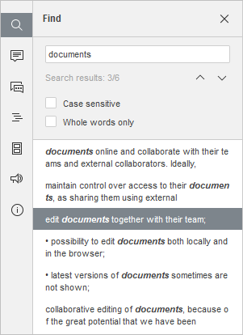

Funkcija pretrage
Da biste pretražili potrebne karaktere, reči ili fraze u trenutno uređivanom PDF-u, kliknite na ikonu koja se nalazi na levoj bočnoj traci PDF Editora, ikonu u gornjem desnom uglu ili koristite kombinaciju tastera Ctrl+F (Command+F za macOS) da otvorite mali panel za pretragu, odnosno kombinaciju Ctrl+H da otvorite prošireni panel za pretragu.
Mali panel Find otvoriće se u gornjem desnom uglu radne oblasti. Panel sadrži polje za unos upita za pretragu, broj pronađenih rezultata i kontrole za prelazak na prethodni ili sledeći rezultat, kao i zatvaranje panela.

Da pristupite naprednim podešavanjima, kliknite na ikonu ili koristite kombinaciju tastera Ctrl+H.
Find panel će se otvoriti:

- Unesite svoj upit u odgovarajuće polje za unos podataka Pretraga.
- Da biste se kretali između pronađenih pojavljivanja, kliknite na jednu od strelica. Dugme prikazuje sledeće pojavljivanje, dok dugme prikazuje prethodno.
-
Precizirajte parametre pretrage označavanjem željenih opcija ispod polja za unos:
- Razlikuj mala i velika slova – koristi se za pronalaženje samo onih pojavljivanja koja su napisana istim rasporedom velikih/malih slova kao i vaš upit (npr. ako je upit „Editor“ i ova opcija je uključena, reči kao što su „editor“ ili „EDITOR“ neće biti pronađene).
- Samo cele reči – koristi se za označavanje samo celih reči.
Sva pojavljivanja biće istaknuta u fajlu i prikazana kao lista u panelu Pretraga sa leve strane. Koristite listu da brzo pređete na željeno pojavljivanje ili koristite navigacione tastere i .